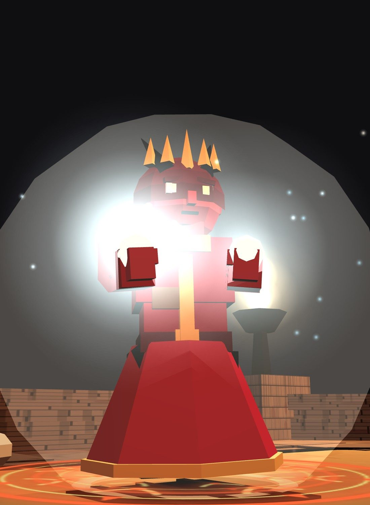

PC · Phone · Controller
The Deep Guild presents
Guttercrown
Pit-fighters of the Undercity
116ways to end a fight
Bleed for coin. Climb the Ledger. Take the crown.
North Coast StudiosAdults · Blood & goreE Concepts